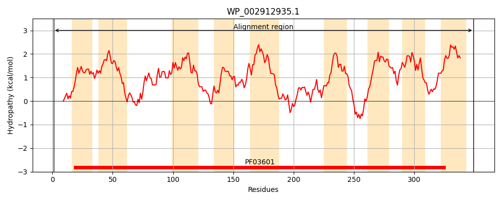
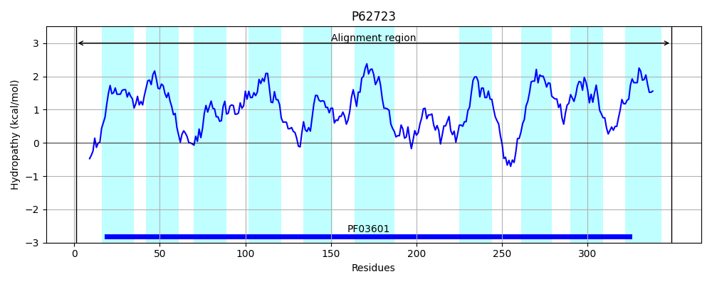
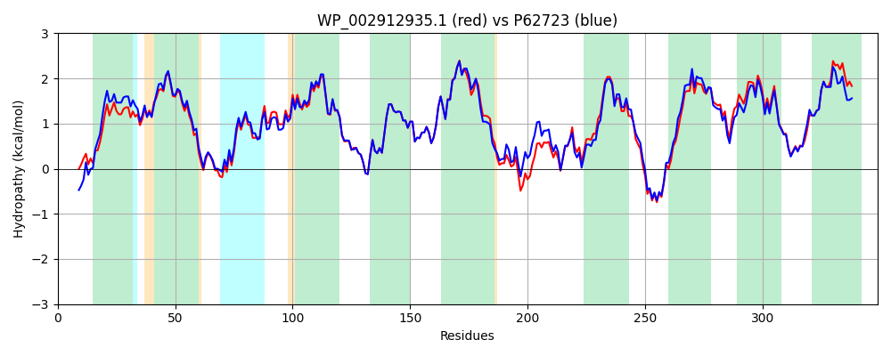

Hit Accession: P62723
Hit TCID: 2.A.98.1.3
Hit Description: gnl|BL_ORD_ID|11171 gnl|TC-DB|P62723|2.A.98.1.3 Hypothetical UPF0324 membrane protein yeiH - Escherichia coli.
Mach Len: 349
e:0.000000
Query TMS Count : 9
Hit TMS Count: 10
TMS-Overlap Score: 9.050000
Predicted Substrates:None
BLAST Alignment:
Score: 1520 , Bit scores: 590 bits, E-value: 0.0e+00, Alignment length: 349, Percentage identity: 83
Query: 1 MTALTLPTKHRSLWHFVPGLALTAALTGAALWAGSFPAIAGAGFSALTLAILFGMVVGNTVYPKIWQPCDGGVIFAKQHLLRLGIILYGFRLTFAQIADVGVSGILIDVLTLSSTFFIACFLGQKVFGLDKHTSWLIGAGSSICGAAAVLATEPVVKAEASKVTVAVATVVIFGTIAIFLYPAMYPLLAHWFTPETYGIYMGSTMHEVAQVVAAGHAVSPDAENAAVIAKMLRVMMLAPFLLFLAARVKQLTPAGNGEKSKITIPWFAIMFILVAVFNSFHLLPKAVVDMLVTLDTVLLAMAMAALGVTTHVSALKKAGAKPLLMALMLFVWLIVGGGVINVAIHSLMA 349
MT +TL +HR+LWHF+PGLAL+A +TG ALW GS PA+AGAGFSALTLAIL GMV+GNT+YP IW+ CDGGV+FAKQ+LLRLGIILYGFRLTF+QIADVG+SGI+IDVLTLSSTF +ACFLGQKVFGLDKHTSWLIGAGSSICGAAAVLATEPVVKAEASKVTVAVATVVIFGT+AIFLYPA+YPL++ WF+PET+GIY+GST+HEVAQVVAAGHA+SPDAENAAVI+KMLRVMMLAPFL+ LAARVKQL+ A +GEKSKITIPWFAI+FI+VA+FNSFHLLP++VV+MLVTLDT LLAMAMAALG+TTHVSALKKAGAKPLLMAL+LF WLIVGGG IN I S++A
Sbjct: 1 MTNITLQKQHRTLWHFIPGLALSAVITGVALWGGSIPAVAGAGFSALTLAILLGMVLGNTIYPHIWKSCDGGVLFAKQYLLRLGIILYGFRLTFSQIADVGISGIIIDVLTLSSTFLLACFLGQKVFGLDKHTSWLIGAGSSICGAAAVLATEPVVKAEASKVTVAVATVVIFGTVAIFLYPAIYPLMSQWFSPETFGIYIGSTVHEVAQVVAAGHAISPDAENAAVISKMLRVMMLAPFLILLAARVKQLSGANSGEKSKITIPWFAILFIVVAIFNSFHLLPQSVVNMLVTLDTFLLAMAMAALGLTTHVSALKKAGAKPLLMALVLFAWLIVGGGAINYVIQSVIA 349 | Protein Hydropathy Plots: |
|---|
|  |  |
Pairwise Alignment-Hydropathy Plot:
|
|---|
|  |